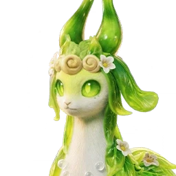

รายชื่อ Aniimo › #089

Glameep
#089ธาตุน้ำ / พืชNova—ยังไม่เปิดให้จับ
สวมขนใบไม้สีเขียวสด Glameep ก้าวเดินเบา ๆ ไปตามริมทะเลสาบ ชอบน้ำใสที่สุด โดยเฉพาะเมื่อน้ำสะท้อนความงามสง่าและไม่เร่งรีบของตัวเอง
ดูรายละเอียดเต็ม ร่างพิเศษ และร่างเปล่งประกายค่าสถานะพื้นฐาน
| HP | 122 |
|---|---|
| ATK | 100 |
| P.DEF | 92 |
| M.DEF | 89 |
| REGEN | 97 |
| BREAK | 50 |
สกิล
| โจมตีปกติ | ATK พืช ใช้พลังพืชโจมตีเป้าหมายจากระยะไกล |
| สกิล 1 | Baa-Baa Sweetbubb น้ำ ยิงลำแสงฟองที่ทะลุทั้งเพื่อนและศัตรู ทำดาเมจเป้าหมาย และให้โล่แก่เพื่อนตามเส้นทาง โล่เท่ากับ 7.0% ของ HP สูงสุดของผู้ร่าย อยู่ได้ 10 วินาที |
| สกิล 2 | Baa-Baa Healbubb พืช ขณะลอยและเคลื่อนที่ ฮีลเพื่อนทุกตัวในระยะรวม 12% ของ HP สูงสุดของผู้ร่ายภายใน 6 วินาที |
| อัลติเมต | Leafwave Bubble พืช เพิ่มการฮีลที่เพื่อนรอบตัวได้รับ 15% เป็นเวลา 30 วินาที และฟื้น HP ผู้ร่าย 21% ของ HP สูงสุดภายใน 2 วินาที |
งานใน Homeland
งานธาตุน้ำ Lv.3, งานธาตุพืช Lv.3